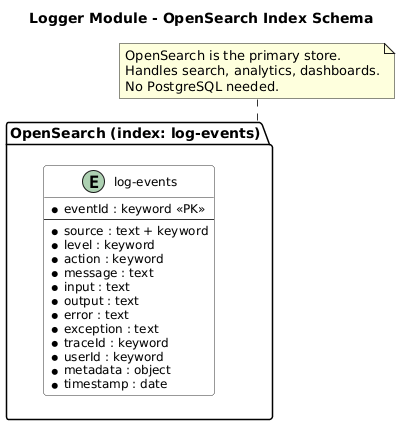

Database Design Document
Logger Module
LOG
1. Overview
1.1 Purpose
This document defines the data storage design for the Logger module. Unlike other modules that use PostgreSQL, the Logger module uses OpenSearch as its primary data store for full-text search, analytics, and dashboards.
1.2 Database Strategy
| Aspect | Decision |
|---|
| Database | OpenSearch (primary store) |
| Index | log-events |
| Primary Key | eventId (UUID) |
| Timestamp Field | timestamp (ISO 8601) |
| Retention | 90 days (configurable via ISM policy) |
1.3 Requirements Addressed
| SRS Requirement | Database Solution |
|---|
| FR-001 Ingest Log Events | OpenSearch index for log storage |
| FR-002 Query Logs | Full-text search via OpenSearch |
| FR-003 Log Analytics | OpenSearch aggregations |
| FR-004 Real-time Monitoring | OpenSearch change feed + WebSocket |
| NFR-002 Query Response Time | Field-level keyword indexes for fast filtering |
| NFR-004 Log Retention | ISM policy: 90-day lifecycle (hot/warm/cold/delete) |
1.4 Index Schema Diagram

Figure 1: Logger Module - OpenSearch Index Schema
2. Index Schema
2.1 Index: log-events
{
"index": "log-events",
"mappings": {
"properties": {
"eventId": { "type": "keyword" },
"source": { "type": "text", "fields": { "keyword": { "type": "keyword" } } },
"level": { "type": "keyword" },
"action": { "type": "keyword" },
"message": { "type": "text" },
"input": { "type": "text" },
"output": { "type": "text" },
"error": { "type": "text" },
"exception": { "type": "text" },
"metadata": { "type": "object", "enabled": true },
"traceId": { "type": "keyword" },
"userId": { "type": "keyword" },
"timestamp": { "type": "date" }
}
}
}
3. Field Mappings
| Field | Type | Searchable | Description |
|---|
eventId | keyword | Exact | Unique event identifier (UUID) |
source | text + keyword | Full-text + Exact | Producing service name (auth, sms, etc.) |
level | keyword | Exact | Log level: debug, info, warn, error |
action | keyword | Exact | Event action (login, register, send_otp, etc.) |
message | text | Full-text | Human-readable log message |
input | text | Full-text | Input data as JSON string |
output | text | Full-text | Success output as JSON string |
error | text | Full-text | Error message on failure |
exception | text | Full-text | Exception with stack trace |
metadata | object | Nested | Additional context data |
traceId | keyword | Exact | Distributed trace ID |
userId | keyword | Exact | Associated user ID |
timestamp | date | Range | Event timestamp (ISO 8601) |
4. Index Lifecycle
| Phase | Action | Condition |
|---|
| Hot | Index documents | Default |
| Warm | Force merge, shrink | After 7 days |
| Cold | Read-only, compress | After 30 days |
| Delete | Delete index | After 90 days |
5. Data Dictionary
| Index | Description | Resolves | Est. Docs (Y1) |
|---|
| log-events | Application logs from all services | FR-001, FR-002, FR-003, FR-004 | 10,000,000 |
6. Backup & Recovery
| Type | Frequency | Method |
|---|
| Snapshot | Daily | OpenSearch Snapshot API to S3 |
| Index Recovery | On demand | Restore from snapshot |
7. Performance Tuning
| Setting | Value | Description |
|---|
| Refresh Interval | 30s | Batch indexing for throughput |
| Number of Shards | 3 | Based on data volume |
| Number of Replicas | 1 | High availability |
| Heap Size | 4GB | 50% of available RAM (max 32GB) |